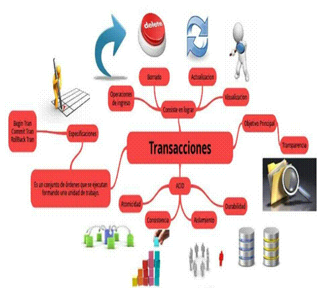

Tras la creación de un proyecto, las transacciones se especifican en diarios o en formularios relacionados con el proyecto. Estos formularios pueden incluir facturas de servicios, pedidos de compra, solicitudes de compra o facturas de proveedores.
Se admiten cuatro tipos predefinidos de transacciones en Gestión de proyectos y contabilidad:
- Hora: las transacciones se vinculan a la compensación financiera de los trabajadores del proyecto, como asesoría, instalación o diseño.
- Gasto: las transacciones están asociadas a un proyecto, a menos que las transacciones se relacionen con artículos o costes. Entre los ejemplos encontramos gastos de viajes o servicios del proveedor.
- Artículo: las transacciones están vinculadas a los artículos que se comprarán para su reventa, y a artículos que se utilizan en un proyecto, como cuando el cliente compra un equipo nuevo a través de la empresa para el proyecto.
- Cuota: todos los ingresos fijos vinculados a un proyecto de tiempo y material, como una bonificación para la pronta entrega de un plan de anteproyecto y presupuesto.
Además de estos tipos de transacción, las transacciones a cuenta representan los anticipos para un proyecto de tiempo y material o los pagos de programación para proyectos de precio fijo.
Todos los tipos de transacción tienen las siguientes características:
- El sistema busca los precios de costes y las ventas predeterminados, y los aplica a la transacción. Los precios se pueden anular en el diario.
- Los grupos de impuestos del proyecto se toman del proyecto o del contrato del proyecto. Para las transacciones que no incluyen artículos, los impuestos de ventas del artículo se basan en la categoría de proyecto especificada.
- La propiedad de línea para una transacción indica si la transacción registrada puede facturarse. La propiedad de línea imputable se aplica a los proyectos de tiempo y material.
- Sólo es posible que el sistema valide las transacciones de cuotas, gastos y horas. Esto permite controlar cómo se registran las transacciones de proyecto al limitar los valores disponibles para los trabajadores, los proyectos, las categorías en diarios y hojas de horas.
-

- Ambas transacciones en un proyecto suelen estar resumidas al registrarse en la contabilidad general y gestionadas en el libro mayor de proyecto.